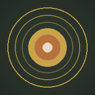

Deine tägliche Praxis
Komm zur Ruhe.
Werde präsent.
Lass dich führen: eine Meditation in einem Fluss — von der geführten Eingangs-Meditation über Impulse und Stille bis zum Gong, der dich in deinen Tag entlässt.
Die Reise heute
- Lade die Journey …
Schalte die 7-Tage-Reise frei
Du hörst gerade die tägliche Meditation. Melde dich an und bekomme für jeden Wochentag eine andere geführte Meditation.

Als App auf dein iPhone
Du kannst diese Seite wie eine echte App auf deinem iPhone installieren — mit dem Innercraft-Symbol auf dem Home-Bildschirm:
- Öffne diese Seite in Safari
- Tippe unten auf das Teilen-Symbol (Quadrat mit Pfeil nach oben)
- Wähle „Zum Home-Bildschirm“
- Tippe oben rechts auf „Hinzufügen“
Ab jetzt startest du deine Meditation direkt vom Home-Bildschirm — im Vollbild, ohne Browser-Leisten.
Gesamt
00:00
Dieser Schritt
00:00
Meditation abgeschlossen
Jetzt bist du präsent
und gerüstet für deinen Tag.
Wir wünschen dir einen schönen Tag.